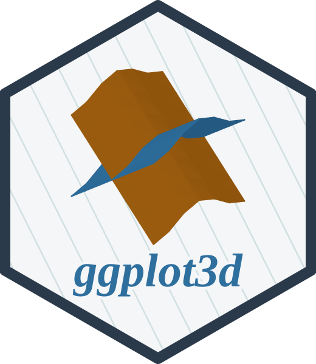

Finite hyperbolic ball and sheet coordinates
Source:R/space-hyperbolic-finite.R
coord_hyperbolic_3d.RdAccepts Poincare or Klein ball positions and draws their intrinsic geodesics through the shared space sampler. Canonical points lie on the future Lorentz hyperboloid. The hyperboloid_sheet model lifts points in the z=0 disk to (X1,X2,X0). Its reference circles are the Klein disk at X0=1 and the Poincare disk at X0=0. Half-space has positive z. All input points are finite and strictly interior to their charts.
Usage
coord_hyperbolic_3d(
model = "klein",
input = model,
extent = 3,
references = character(),
curvature = -1,
centre = NULL,
distance_breaks = NULL,
inside = FALSE,
observer = NULL,
fog = NULL,
...
)Arguments
- input, model
Input chart and display model.
- extent
Hyperbolic radius setting display bounds of unbounded models.
- references
Reference circles for hyperboloid_sheet: "klein", "poincare".
- curvature
Negative sectional curvature. Ball coordinates are unitless; intrinsic distances are scaled by 1/sqrt(-curvature).
- centre
A point in the input chart, or a future Lorentz isometry. Points are moved to the origin before display.
- distance_breaks
Optional increasing nonnegative distances for a radial distance guide, in intrinsic units.
- inside
Use a first-person perspective eye at the Klein origin.
- observer
Observer point in the input chart, or an isometry taking the observer to the origin. Supply one of observer, centre or isometry.
- fog
Optional positive inverse-area brightness scale. At each primitive centre brightness is min(1, fog/area), where area is sinh(sqrt(-curvature)*d)^2/(-curvature). Colours are scaled in linear light.
- ...
Arguments to
coord_3d(), including isometry.
Details
Klein is the default display and input. Hyperbolic layout statistics register their own Poincare input chart. Half-space is truncated to the finite display box set by extent. Geodesic faces and arcs use the common screen-error sampler. Position scales must be identity transforms. Klein lighting transports Minkowski plane normals to the origin. Inside views use the existing vector visibility pipeline with a perspective eye at the Klein origin. Near defaults to sqrt(machine epsilon), and far to the farthest panel-box corner, in normalised camera units. In the Klein model an observer, centre or isometry is a Lorentz transformation of the homogeneous coordinates (X, X0) and is carried by the camera pre-transform, as in Weeks (2002): the geometry is emitted once, and animate_3d(isometry = ) frames only recompile, with fog and intrinsic normals evaluated for the moved observer. Poincare and half-space models apply the action before packing. Camera azimuth, elevation and roll set facing.
References
Nickel and Kiela (2017). Poincare embeddings. https://arxiv.org/abs/1705.08039. Phillips and Gunn (1992). Visualizing hyperbolic space. https://graphics.stanford.edu/papers/webviz/webviz/node2.html. Weeks (2002). Real-time rendering in curved spaces. doi:10.1109/MCG.2002.1046633 . Coulon et al. (2022), Section 7. https://arxiv.org/abs/2010.15801.
Examples
d <- data.frame(x=c(-.7,.7),y=c(.2,.2),z=0)
ggplot2::ggplot(d,ggplot2::aes(x,y,z=z))+geom_path_3d()+coord_hyperbolic_3d()
ggplot2::ggplot(d,ggplot2::aes(x,y,z=z))+geom_path_3d()+
coord_hyperbolic_3d(model="poincare",curvature=-4,distance_breaks=c(0,.5,1))
d <- data.frame(x=.5,y=c(-.2,.2,.2,-.2),z=c(-.2,-.2,.2,.2))
ggplot2::ggplot(d,ggplot2::aes(x,y,z=z))+geom_polygon_3d(fill="steelblue")+
coord_hyperbolic_3d(inside=TRUE,observer=c(.1,0,0),azimuth=180,elevation=0)